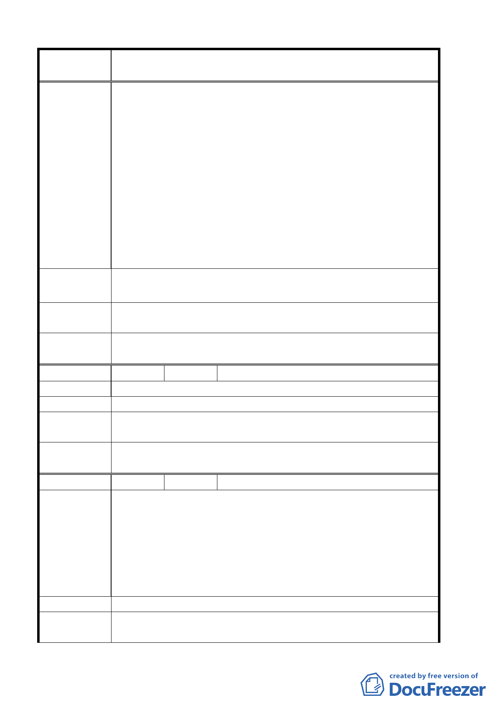

案 名 臺北市北投區都市計畫通盤檢討案（主要計畫）案
所等起使用範圍較廣。目前本區土地附近學校林立也很適
合補習班、安親班、托兒所且十分符合當地居民需求。而
今重編後竟受分區使用限制而無法設立且縮小分區使用之
範圍。已極端嚴重影響該地區土地所有權人權益。
三、一般而言，分區使用限制改編後，其限制應略寬於或至少
相同於原有規定。而非限制的更嚴苛以致損害人民之權
益。目前該地段有十五間一樓店面，其中六間店面因分區
使用限制而難以有效使用或租售其空屋比率竟達百分之四
十，嚴重浪費土地資源，而且北投地區之著名觀光資源為
溫泉，現在完全禁止申請接裝，加以該路段實際上並無觀
光人潮不易開發為觀光地區。
建 議 辦 法 請回復台北市北投區珠海路 2 號至 38 號之土地使用分區使用為
商三或比照商三分區之使用限制規定。
專案小組審
查結論
已另案辦理都市計畫案變更。
委員會議
決議
同意依專案小組審查結論辦理。
編 號 １９ 陳情人 交通局
陳情理由
建 議 辦 法 北投區中央北路四段 601 巷保護區變更為道路用地。
專 案小組 審 93.6.10 專案小組第五次審查會議：由於相關資料不足及工程
查 論 時程緊迫，建議另案辦理個案變更。
委員會議
決議
同意依專案小組審查結論辦理。
編 號 ２０ 陳情人 關渡社區環境改造協會
1.北投區大度路三段 296 及 300 巷附近附近地區，原為台鐵關
渡線關渡火車站前之街道，因捷運興建後將車站遷移，而政
府未能做好岀入設計，目前成為幾近貧民窟之死巷，與當前
陳 情 理 由 繁榮不可同日而語，嚴重影響居民進岀交通及生計。
2.關渡捷運站目前已是八里、蘆洲等地之重要轉運站，然不論
在交通需要、景觀和諧、社區發展、及當地居民的住宅品質上
皆亟需對該就社區進行重新規劃
建 議 辦 法 該地區變更為住宅區
專 案小組 審 一、93.6.10 專案小組第五次審查會議：同意發展局建議主要
查結論
計畫工業區變更為商業區，該案以另擬細部原則同意陳情
第 15 頁，共 49 頁